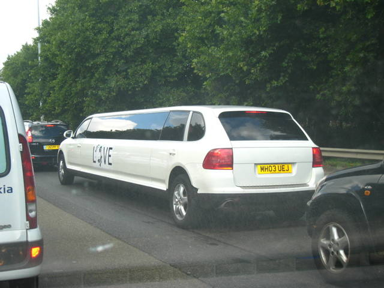
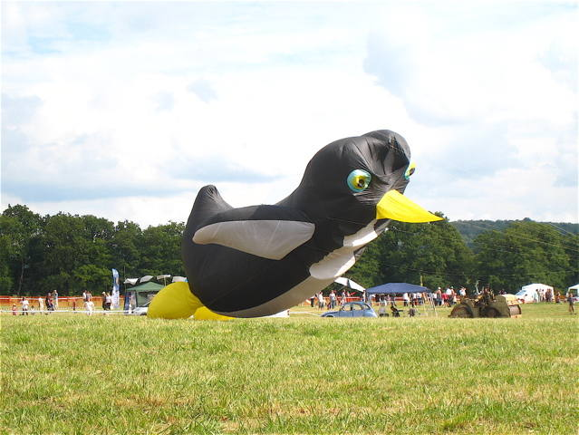
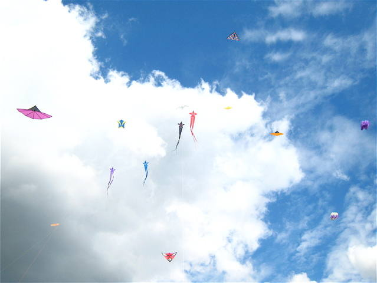
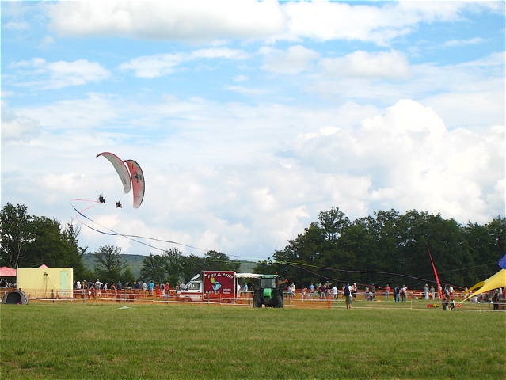
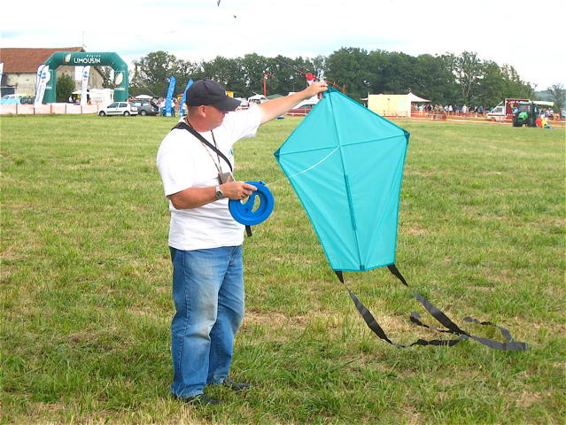
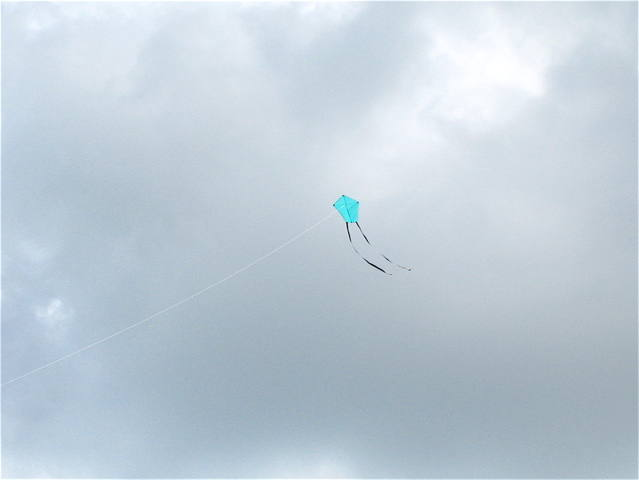
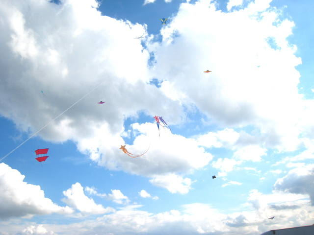

Blond 2010


Blond, entre Limoges et Bellac, dans le Limousin, le festival Estivol : cerfs-volants, ULMs, paramoteurs, paras, montgolfières... Mais la route est longue, longue, comme cette Porsche Cayenne légèrement modifiée... que je double ! Ca m'irait bien pour camper, hors la hauteur sous plafond et le budget !

Vendredi soir sera la meilleure journée pour le vent. On fait des essais comparatifs de flow-forms, Bécotisés ou pas ! Les conclusions restent floues...

Marco est déjà là, avec ses ailes volantes électriques très esthétiques, rapides, discrètes et manoeuvrantes ! Il a fait plus de 1000 km pour venir d'Italie !

Au soir, Bernard Arus et les Toulousains accueillent entre leurs campings-cars... Jean-Claude Veillerobe et Josette sont présents, avec leur nouvelle (je n'ai pas dit neuve !) caravane, plus spacieuse...

Samedi matin, les paramoteurs nous font un petit décollage en patrouille, ils feront mieux quand ils seront plus nombreux !

Ils tournent au-dessus de la piste pendant un moment, quasiment en faisant de la voltige !

Ah, ils ont reçu du renfort, petit à petit, l'Equipe de France se révèle...

Maintenant, ils se sont équipés de longs rubans et se livrent à des manoeuvres combinées et rotatives du plus bel effet !

Les ULMs arrivent aussi progressivement, comme celui-ci dont les surfaces, en contreplaqué comme en toile, sont parfaitement lisses !

Un cervoliste que je ne vois qu'à Estivol a apporté ses créations, un delta curviligne comme celui-ci, très plat sauf la queue relevée et qui vole bien dans ce vent calme...

Il a aussi un oiseau de même facture, qui vole aussi bien !

Les voilà au sol, on distingue bien la queue relevée pour maintenir la tension de la ligne malgré la configuration plate du reste !

Le club Plein Vent de Toulouse (pas celui de Houlgate) a amené une grosse brassée de cerfs-volants et de bannières, très ouvragées, des carrés assemblés et décorés, et de petites lanières sur les pointes !

Les Aliens ont répondu présent. Jean-Claude Mariette a construit un beau Rolloplan avec de petites lanières comme tendeurs d'ailes...

Il vole aussi très bien, aussi décoratif en l'air qu'au sol !

On verra aussi venir un avion de voltige, mais il n'utilise pas le terrain, il doit venir de Limoges !

Il y a des cerfs-volants en l'air, mon Oiseau Bleu, le Folyang de Guy Verdier, le Jessica de Richard et un pyrodelta qui a laissé une demi-queue dans la ligne du Folyang (à droite de la photo), mais vole quand même, en crabe !

Côté ULMs, le Pou du Ciel est arrivé sur sa remorque derrière la voiture (les ailes se replient !)... Le fabricant et pilote est le monsieur en TShirt blanc, à gauche.

Les autogires sont de plus en plus "professionnels", avec des cabines profilées, alors que les anciens pilotes étaient juste assis sur un tube relié au mât... La sécurité a dû y gagner beaucoup !

Ici, un autogire vole au milieu (visuellement) des cerfs-volants : le train de 2 Jessicas de Jean-Pierre Schaefer, une Jessy, une Jessica et 2 flow-forms...

Le vent est très faible, je vole encore ainsi que 2 Jessicas... et un ballon solaire noir de 5 ou 6 m !

Mais Richard a été trop optimiste et a mis son CV dans le chêne du coin...

Ah, une bonne risée, le crocodile des Awitas se soulève pour le plus grand plaisir des enfants !

Le team Gyro effectue une belle présentation de 3 autogires en formation !

Et puis la patrouille Cartouche Doré, fondée en 1989 sur la Base-Ecole de Cognac sur Epsilon, fait sa présentation. Formations bien serrées, avec des figures plus acrobatiques que précédemment, mais l'enchaînement est très mou, avec des éloignements et des temps morts trop longs...

La Patrouille va bientôt faire un nouveau passage au-delà des cerfs-volants (qui auraient dû se poser pour leur plaire !) !

Le vent est maintenant pas mal, les Chulas sont quand même bien serrés pour des cerfs-volants aussi mobiles, mais c'est amusant dans les thermiques qui les rapprochent !

Raymond fait voler son delta parfaitement symétrique : l'aile droite est égale à l'aile gauche, juste tournée de 90 degrés !

Sur la piste, les Pulsoréacteurs se sont élancés ! Ces maquettes atteignent 150 km/h et font un bruit effarant qui remplit l'atmosphère !


Comme le vent est meilleur, le manchot peut enfin décoller !


Il y a de plus en plus de Chulas en l'air...


Les paramoteurs décollent maintenant avec d'immenses rubans qu'ils font virevolter en arabesques esthétiques !


Guy Verdier a réalisé une lanterne du type conçu par Eric Stempell en plastique et bambou, à Hirel fête du CVCF, pour les ateliers. Mais la sienne est en spi et carbone !


Avec ses deux queues, il la montera sans problème à une centaine de mètres...


Pour les Chulas, ça s'aggrave ! Pour être plus près, il faudrait qu'ils s'accrochent !

Les ficelles des Chulas et autres Jessicas trahissent le rassemblement en train de s'opérer en altitude...

Raymond a sorti un autre cerf-volant, un grand, voisin du Météo et ça tire, on pourra se lancer dans le sauvetage de celui laissé dans le chêne...

Il y a une très grande échelle à la ferme, et Sylvien a toujours une perche démontable d'une douzaine de mètres munie d'embouts interchangeables... Richard s'y colle, monte encore dans les branches et en poussant avec la perche arrive à extirper la bête des griffes du chêne !

Sur le soir, le vent baisse bien et les Montgolfières commencent à se dresser pour les vols d'initiation des volontaires (payants)...

Ca y est, elles sont parties ! Les paramoteurs se font plaisir en tournant autour avec leurs rubans !

Pour les cervolistes, c'est l'heure de la pause avant le dîner. Marie-Hélène fait circuler la Tête de Moine, et la Girolle pour la laminer en petites fleurs délicieuses...

Et voilà, les Montgolfières disparaissent lentement à l'horizon, elles ne seront pas secouées aujourd'hui... Un autogire fait un dernier vol, peut-être pour rentrer chez lui...

Et puis dîner dans la pittoresque et immense grange de la ferme ! On ne se presse pas, le vent tend quasiment vers zéro...

Le speaker s'égosille à appeler les cerfs-volants illuminés, personne ne bouge, le vent est absolument nul... Marco fait voler un de ses avions porteur d'un éclairage puissant...

Les Montgolfières s'alignent et se dressent pour une séance d'illumination, mais ne partiront évidemment pas dans le noir...

L'ensemble forme un spectacle magnifique qu'on ne se lasse pas de revoir ! Les plus claires sont les plus belles, mais le réglage du brûleur a aussi son influence...

Dimanche matin, beau temps, les paramotoristes se préparent au sol et déballent leur matériel !

Et voilà, ils décollent à six de front et voleront ensemble un bon moment, dans diverses formations !

Au sol, divers stands se montent comme celui du Limousin qui présente d'intéressantes perspectives...

J'aime bien ce bel oiseau, sobre, élancé et très stable !

Des cerfs-volants plus habituels volent aussi !

Ah, voici un Circoflex dont le propriétaire pourrait bien être Breton !

Et même un avion nous survole dans l'aire des cerfs-volants, c'est un scandale !

Sous Megoel qui a repris du service car il n'a pas besoin, malgré ses 8 m, de beaucoup d'air, on voit monter cet avion cellulaire coloré !

Les Alien offrent encore leur ballet, avec leur ruban aujourd'hui, mais le vent les lâchera au milieu du show !

Un magnifique Cody rouge, à Michel Wirth, je crois, provenant de David Gomberg...

Le "Jet" à pulsoréacteur et fumée rouge fait de nouveau vrombir l'atmosphère du festival... Ses passages à basse altitude et grande vitesse sont impressionnants et démontrent une belle maîtrise du pilotage...

Pendant que Megoel est monté, la grosse pieuvre de Awitas s'est bien stabilisée !

Bon, tout le monde peut voler, maintenant, les petits les gros, les bas et les hauts...

Des parapentistes font des initiations et des démonstrations au sol, seuls ou même en formation...

Il y en a même un qui essaye de faire du "rouleau-compresseur kite", mais ça n'avance pas beaucoup !

Pas de tourisme, cette semaine, mon fils et mon petit-fils sont déjà chez moi et m'attendent, je rentre direct !
Blond 2010 : Un énorme terrain pour ce festival qui offre un spectacle très varié de tout ce qui peut voler ! Bon accueil et un vent honnête sans plus, sauf en vol de nuit où il ne nous a pas permis de nous exprimer (mais ce n'est pas rare ici !).